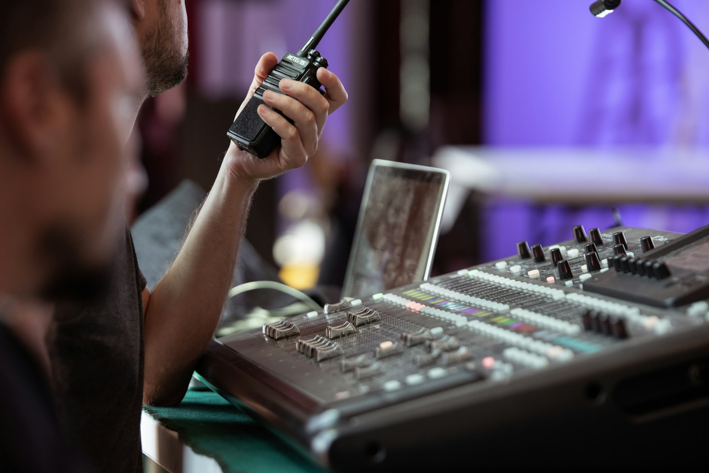
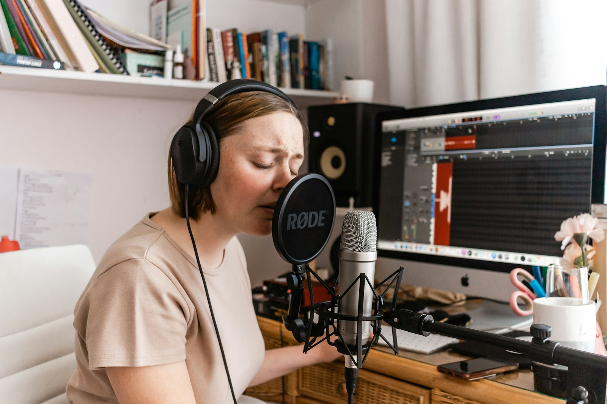

MP3 vs AAC vs Opus for Icecast streaming
Most stations default to MP3 because it works everywhere. That is a fine baseline, but it leaves quality and bandwidth on the table. Here is what each codec is actually good at.
Published 2026-05-08 / 9 minute read

Quick recommendation
- Talk-heavy content (podcasts, news, sports): AAC at 96 kbps for the best quality-per-byte without compatibility headaches.
- Music streaming, broad audience: MP3 at 192 kbps. Works literally everywhere.
- Music streaming, modern audience: Opus at 96 kbps. Sounds better than 192 kbps MP3 in most blind tests, but test your player chain first.
If you stop reading here, that is the answer. The rest of this post is the reasoning.
MP3 (libmp3lame)
Pros. Universal compatibility. Every browser plays it natively, every podcast app supports it, every smart speaker, every car stereo. Has been the lingua franca of internet radio for 25 years and isn't going anywhere.
Cons. Oldest codec on this list. Below 128 kbps the artifacts get audible, especially on cymbals, brass, and complex orchestral material. The MP3 patents finally expired in 2017, but the codec design is from 1993 and shows its age.
Bitrate guidance:
- 96 kbps: spoken word in a pinch. Audible artifacts on most music.
- 128 kbps: talk, news, sports. Acceptable for casual music.
- 192 kbps: the comfortable sweet spot for most music genres.
- 256 to 320 kbps: music-focused stations. Diminishing returns above 256.
Mount file extension: .mp3. Most listeners and apps expect this.
AAC
Pros. Better psychoacoustic model than MP3. AAC at 128 kbps usually sounds as good as MP3 at 192 kbps in listening tests. Native support across modern browsers, iOS, Android, podcast apps, and most managed Icecast platforms.
Cons. Not as universally supported as MP3 in older players or pre-2018 in-car infotainment. Some Icecast clients and CDN edges occasionally have framing quirks with AAC mounts. The codec is patented but practically every modern playback chain has a license, so this rarely matters for non-commercial broadcasters.
Bitrate guidance:
- 64 kbps: spoken word. Notably better than MP3 at the same bitrate.
- 96 kbps: talk shows, podcasts. Excellent quality-per-byte.
- 128 kbps: most music. The AAC sweet spot.
- 192 kbps: high-fidelity music. Diminishing returns above this.
Mount file extension: .aac.
Opus (libopus)
Pros. Best perceptual quality per kilobit, hands down. Opus at 96 kbps typically beats MP3 at 192 kbps in blind listening. Designed for both speech and music, switches automatically. Royalty-free. The codec of choice for WebRTC, Discord, and modern voice apps.
Cons. Adoption story is uneven over Icecast specifically. Browser <audio> elements handle Opus correctly, but embedded player widgets, smart speakers, podcast directories, and some CDN edges have rough edges. Real-world Opus over Icecast can require listener-side workarounds. Test before relying on it for a public mount.
Bitrate guidance:
- 32 kbps: spoken word. Surprisingly listenable.
- 64 kbps: talk and casual music.
- 96 kbps: music. Excellent quality.
- 128 kbps: high-fidelity music. Above this is overkill for streaming.
Mount file extension: .opus or .ogg.

Side-by-side
| Aspect | MP3 | AAC | Opus |
|---|---|---|---|
| Quality at 128 kbps | Acceptable | Very good | Excellent |
| Browser support | Universal | Modern | Modern |
| Smart speakers | Universal | Good | Mixed |
| Podcast directories | Universal | Most | Limited |
| In-car infotainment | Universal | Mostly OK after 2018 | Poor |
| CDN edge handling | Trivial | Generally fine | Sometimes finicky |
| License | Royalty-free since 2017 | Patented but widely licensed | Royalty-free |
| FFmpeg encoder | libmp3lame | aac (native) | libopus |
"Quality at 128 kbps" is approximate and subjective. Real perception depends on content type, listener device, and what you grew up listening to.
Decision framework
Pick MP3 if
- Your audience includes anyone using legacy hardware: old radios, in-car infotainment from before 2018, smart speakers from circa 2020.
- Your listener-side player is whatever they have handy: a browser, a podcast app, a streaming aggregator.
- You want zero compatibility risk and you can spare the bitrate.
Pick AAC if
- Your audience mostly uses modern browsers, smartphones, or proper hi-fi setups.
- You care about quality-per-byte to save bandwidth without going to Opus.
- You can verify your CDN edge handles AAC over Icecast cleanly.
Pick Opus if
- You control the listener-side player, or you broadcast to a small known audience.
- Bandwidth matters a lot, or your hosting bills depend on it.
- You don't mind a brief "test on every device that matters" round before going live.
Common mistakes
Codec/mount extension mismatch
A .mp3 mount expects MP3 framing. Send AAC bytes, listeners get a 4xx error or a silent stream. The file extension on the mount path tells listeners and intermediaries what to expect; match it to your encoder.
Higher bitrate doesn't fix bad source
If your input is muddy or clipped, encoding at 320 kbps just preserves the mud accurately. Fix the source first, then pick a codec.
AAC at very low bitrates
Most Icecast AAC encoders are AAC-LC. At 64 kbps and below, AAC-HE (HE-AAC v1 or v2) sounds dramatically better, but it isn't widely available in standard Icecast pipelines. If you need very low bitrates with quality, Opus is usually the better answer.
Opus VBR vs CBR
Some old Icecast clients and players prefer constant bitrate. Radio Streamer uses CBR by default for predictable bandwidth and player compatibility.
Multiple mounts, multiple codecs
Icecast handles many simultaneous mounts. A common multi-codec pattern:
/live.mp3at 192 kbps for legacy compatibility/live.aacat 128 kbps for modern players/live.opusat 96 kbps for bandwidth-tight or quality-conscious listeners
Each mount needs a separate source connection. Radio Streamer broadcasts one mount per OBS instance, so a multi-mount setup needs either a Liquidsoap front-end (consume one mount, transcode and republish to others) or a second OBS instance.
Wrap up
For most stations, MP3 at 192 kbps is the safe default and there is nothing wrong with picking it. If your audience is primarily modern, AAC at 128 kbps is the smarter quality-per-byte choice. Opus is the best codec on paper and increasingly fine in practice; just budget time to test player coverage before going public.